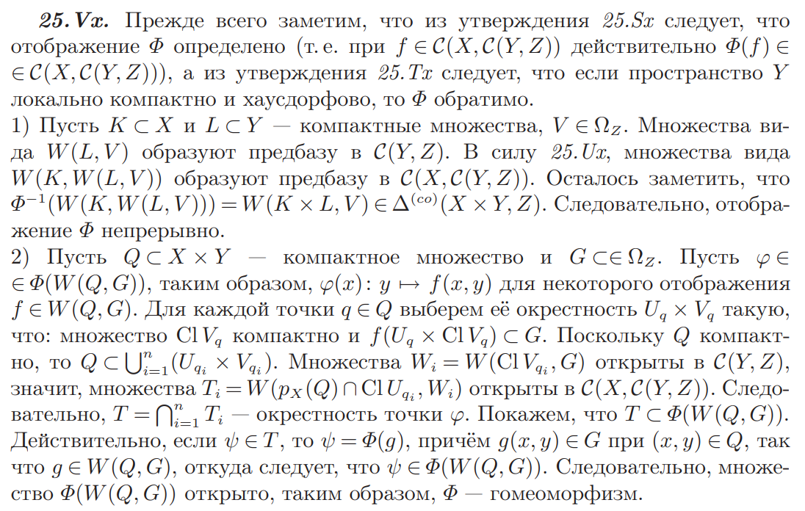

\(\newcommand\blades{\,\,\,\,\style{display: inline-block; transform: rotate(135deg)}{\Large{\dagger}}\kern-7pt\style{display: inline-block; transform: rotate(225deg)}{\Large{\dagger}}}\)
Определение: Пусть \((X, \tau_X)\) и \((Y, \tau_Y)\) – топологические пространства. Топология произведения \(X\times Y\) – это топология, порожденная базой \(\{U\times V: \,\,\,\, U \in \tau_X, \,\,\,\, V \in \tau_Y\}\) на декартовом произведении \(X\times Y\).
Утверждение: Предбаза топологии произведения \(X\times Y\) – это \(\{U\times Y| \,\,\,\,U \in \tau_X\}\cup \{X\times V|\,\,\,\, V \in \tau_Y\}\).
Доказательство: \(\,\,\,\,\blacksquare\)
Определение: Пусть \(X\times Y\) – топология произведения.
Отображение \(\pi_X: X \times Y \to X, \,\,\,\, \pi_X: (x, y) \mapsto x\) – проекция на \(X\).
Утверждение: Проекции \(\pi_X\) и \(\pi_Y\) непрерывны, как отображения \(X\times Y \to X\) и \(X\times Y \to Y\) соответственно.
Доказательство: \(\,\,\,\,\blacksquare\)
Утверждение: Топология произведения – это топология с наименьшим количеством открытых множеств, относительно которой отображения проекции непрерывны.
Доказательство: \(\,\,\,\,\blacksquare\)
Утверждение: (универсальность произведения) \(\varphi: Z \to X\times Y\) непрерывно \(\iff\) непрерывны композиции \(\varphi \circ \pi_X\) и \(\varphi\circ \pi_Y\).
Доказательство:
\(\boxed{\Longrightarrow}\) Композиция непрерывных отображений непрерывна.
\(\boxed{\Longleftarrow}\) Прообраз открытого множества из базы открыт \(\,\,\,\,\blacksquare\)
Определение: Пусть \(X\) – топологическое пространство. Отображение \(x \mapsto (x, x) \in X\times X\) – диагональное отображение. Образ \(X\) при диагональном отображении – диагональ. Обозначается: \(\triangle\).
Утверждение: \(X\) – хаусдорфово \(\iff \triangle\) – замкнуто.
Доказательство:
\((x, y) \in (X \times X) \setminus \triangle \iff x \ne y \iff \exists U_x, U_y \in \tau_X: \,\,\,\, U_x \cap U_y = \varnothing \iff U_x \times U_y \subset (X \times X) \setminus \triangle \,\,\,\,\blacksquare\)
Утверждение: Пусть \(X\) и \(Y\) компактны. Тогда \(X\times Y\) компактно.
Доказательство: Пусть \(\{W_{\alpha}\}\) – покрытие. Для каждой точки \((x, y) \in X \times Y\) выберем окрестность \(U_{x}\times V_{y}\), так чтобы \(U_x \times V_y\) целиком содержалась в некотором \(W_{\alpha}\). Выбрав в покрытии \(\{U_x\times V_y\}\) конечное подпокрытие докажем теорему.
\(X \times y \cong X \,\,\,\, \forall y \in Y\). Рассмотрим покрытие \(\{U_x\times V_y|\,\,\,\, (x, y) \in X\times Y\}\) множества \(X \times y\). В силу компактности \(X\) для каждого \(y\) существует конечное подпокрытие \(\{U^y_{i}\times V^y_{i}\}_{i = 1}^{n_y}\). Пусть \(W_{y} = \cap_i V^y_{i}\). Выделим конечное подпокрытие. Тогда искомое покрытие \(\{U^{y_j}_{i}\times V^{y_j}_{i}\} \,\,\,\,\blacksquare\)
И как мы до сюда добрались без этого?
Определение: Пусть на \(X\) задано отношение эквивалентности – \(\sim\). Пусть \(X\) – топологическое пространство. Отображение проекции – это \(\pi: X \to \{[x]_{\sim}|\,\,\,\, x \in X\}, \,\,\,\, x \mapsto [x]_{\sim}\), где \([x]_{\sim}\) – класс эквивалентности точки \(x\). Зададим на множестве классов эквивалентности \(\{[x]_{\sim}|\,\,\,\, x \in X\}\) топологию. Открытыми считаются множества, прообраз которых при отображении проекции открыт в \(X\).
Такая топология – фактор-топология и обозначается \(X/\sim\).
Утверждение: Отображении проекции \(\pi: X \to X/\sim\) непрерывно.
Доказательство: \(\,\,\,\,\blacksquare\)
Утверждение: Фактор-топология – топология с наибольшим количеством открытых множеств, относительно которой отображение проекции непрерывно.
Доказательство: \(\,\,\,\,\blacksquare\)
Определение: Обозначение \(X/A\), где \(A \subset X\) обозначает, что берется фактор-топология относительно отношения эквивалентности, при котором \(x \sim y \iff x = y\) или \(x \in A\) и \(y \in A\). Топология \(X/A\) получена стягиванием подпространства в точку.
Лемма: Пусть \(X\) регулярно, \(A \subset X\) замкнуто. Тогда \(X/A\) хаусдорфово.
Доказательство: \(\,\,\,\,\blacksquare\)
Определение: Фактор-пространство \((X \sqcup Y) / \sim\) несвязной суммы пространств \(X \sqcup Y\) по отношению эквивалентности \(x \sim y \iff x = y\) или \(x = x_0\) и \(y = y_0\), где \(x_0 \in X\) и \(y_0 \in Y\) – фиксированные точки.
Обозначение: \(I = [0, 1]\).
Определение: Цилиндр – это топология произведения \(X\times I\).
\(X \times 1\) – верхнее основание цилинра, \(X \times 0\) – нижнее основание цилиндра.
Определение: Конус – это \((X\times I)/(X\times 1)\) (стягиваем верхнее основание цилиндра в точку).
\([X\times 1]_{\sim}\) – вершина конуса, \(X\times 0\) – основание конуса.
Определение: Обозначим за \(\mathcal{C}(X, Y)\) или \(Y^X\) множество непрерывных отображений \(X \to Y\). Рассмотрим топологию на \(\mathcal{C}(X, Y)\) с предбазой \(\{W(K, U)\}\), где \(W(K, U) \subset \mathcal{C}(X, Y)\), \(K\) – компакт и \(f(K) \subset U\).
Множество непрерывных функций \(X \to \mathbb{R}\) обозначается: \(\mathcal{C}(X)\).
Утверждение: Пусть \(X\) – компактное пространство, \(Y\) – метрическое, с метрикой \(\rho_0\). Тогда метрика \(\rho(f, g) = \sup_{x \in X}\{\rho_0(f(x), g(x))\}\) задает компактно-открытую топологию на \(\mathcal{C}(X, Y)\).
Доказательство: Докажем корректность определения метрики. \(\rho_0(f(x), g(x))\) непрерывна, как отображение \(f: X \to \mathbb{R}, \,\,\,\, f: x \mapsto \rho_0(f(x), g(x))\). Непрерывный образ компактного множества – компакт, а следовательно \(f(X)\) – компакт в \(\mathbb{R}\), то есть ограниченное (отсюда следует существование \(\sup_{x \in X}\{\rho_0(f(x), g(x))\}\)) и замкнутое (отсюда следует принадлежность супремума множеству, а значит существования максимума).
Проверим, что \(\rho\) – метрика:
Докажем, что порожденная метрикой \(\rho\) топология компактно-открытая. Рассмотрим \(K \subset X\) – компакт и \(U \subset Y\) – открытое в топологии \(Y\). Хотим, чтобы множество \(W(K, U) = \{\mathcal{C}(X, Y) \ni f: K \to U|\,\,\,\, f(K) \subset U\}\) было открыто в \(\mathcal{C}(X, Y)\).
Определение: Универсальное отображение \(l: X\times \mathcal{C}(X, Y) \to Y, \,\,\,\, x \mapsto f(x)\) – отображение вычисления.
Определение: Пространство \((X, \tau_X)\) локально компактно, если \(\forall x \in X, \,\,\,\, \exists U_x \in \tau_X: \,\,\,\, \operatorname{Cl}U_x\) компактно.
Утверждение: (экспоненциальный закон) Определено каноническое отображение \(\Phi: \mathcal{C}(X\times Y, Z) \to \mathcal{C}(X, \mathcal{C}(Y, Z))\) или \(\Phi: Z^{X\times Y} \to (Z^{Y})^X\).
\(\Phi: \mathcal{C}(X\times Y, Z) \ni f \mapsto \Phi(f), \,\,\,\, \Phi(f): X \to \mathcal{C}(Y, Z), \,\,\,\, \Phi(f): x \mapsto f(x, Y)\), где \(f(x, Y)\) обозначает отображение \(f(x, Y): Y \to Z, \,\,\,\, f(x, Y): y \mapsto f(x, y)\).
Доказательство:
